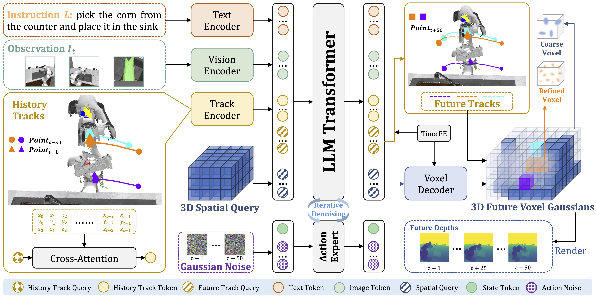
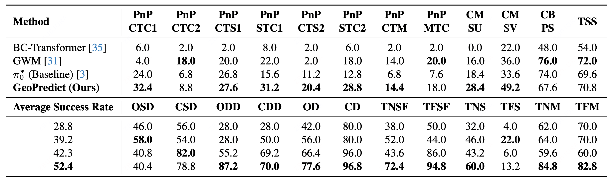
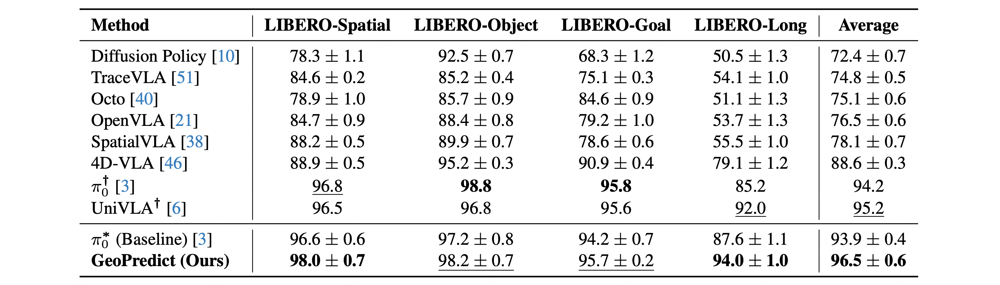
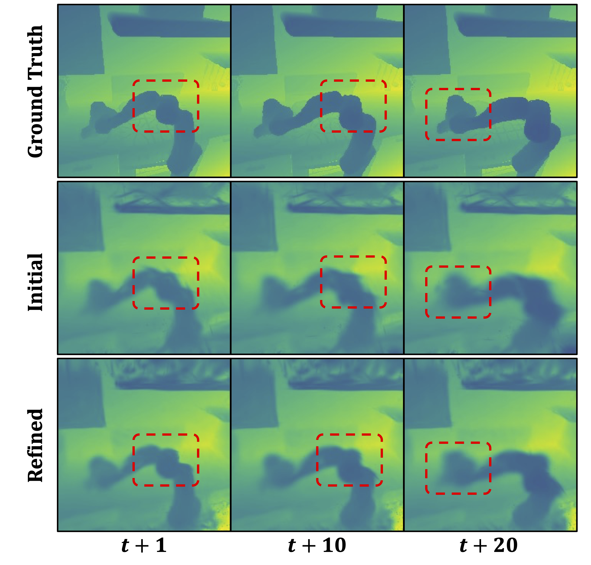
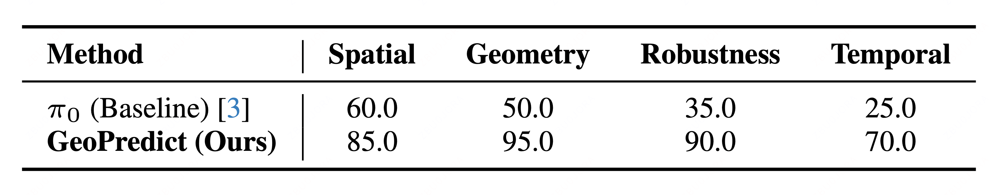

Abstract
Vision-Language-Action (VLA) models achieve strong generalization in robotic manipulation but remain largely reactive and 2D-centric, making them unreliable in tasks that require precise 3D reasoning. We propose GeoPredict, a geometry-aware VLA framework that augments a continuous-action policy with predictive kinematic and geometric priors. GeoPredict introduces a trajectory-level module that encodes motion history and predicts multi-step 3D keypoint trajectories of robot arms, and a predictive 3D Gaussian geometry module that forecasts workspace geometry with track-guided refinement along future keypoint trajectories. These predictive modules serve exclusively as training-time supervision through depth-based rendering, while inference requires only lightweight additional query tokens without invoking any 3D decoding. Experiments on RoboCasa Human-50, LIBERO, and real-world manipulation tasks show that GeoPredict consistently outperforms strong VLA baselines, especially in geometry-intensive and spatially demanding scenarios.
Method

Overview of GeoPredict. Given an instruction, multi-view images and motion history encoded by the Track Encoder, a central LLM Transformer learns two main tasks. First, it predicts multi-timestep 3D keypoint trajectories using learnable Future Track Query. Second, it forecasts future workspace geometry as a predictive 3D Gaussian by processing a 3D Spatial Query through a Voxel Decoder. A track-guided refinement mechanism leverages the predicted future tracks to allocate geometric capacity to task-relevant interaction regions. Our policy then generates the final action via an Action Expert. Crucially, these predictive modules serve exclusively as training-time supervision and are not invoked during inference, thus preserving efficiency.
Main Results
RoboCasa Simulation Benchmark Results

RoboCasa Simulation Benchmark Results. Task success rates (%) across 24 sub-tasks and the Average Success Rate (%). *Denotes our fine-tuned experimental results. Bold indicates the best performing model. See Appendix in our paper for detailed sub-task definitions.
LIBERO Simulation Benchmark Results

LIBERO Simulation Benchmark Results. Task success rates (%) across 4 evaluation suites and the Average Success Rate (%). *Denotes our reproduced experimental results. †Denotes no available standard deviation data. Bold indicates the best performing model, and underline indicates the runner-up model.
Qualitative Results

Qualitative Comparisons of Future Depth Rendering. Visualizations are shown for timesteps \(t+1\), \(t+10\), and \(t+20\). Red boxes highlight the improvements in fine-grained geometric details. Best viewed zoomed in.
Real-World Experiments
Evaluation Suite

Real-world Evaluation Suite. We evaluate the model's capabilities across four settings: Spatial Generalization, Geometry Generalization, Visual Robustness, and Temporal Reasoning. For the first three settings, each column represents different trials of the same task. In the temporal setting (the fourth and fifth columns), the model must distinguish between opposite transport directions (Left-to-Right vs. Right-to-Left) where intermediate observations are visually indistinguishable, requiring the policy to leverage motion history.
Experiment Results

Real-world Experiment Results. Task success rates (%) across four distinct settings: Spatial, Geometry, Robustness and Temporal.